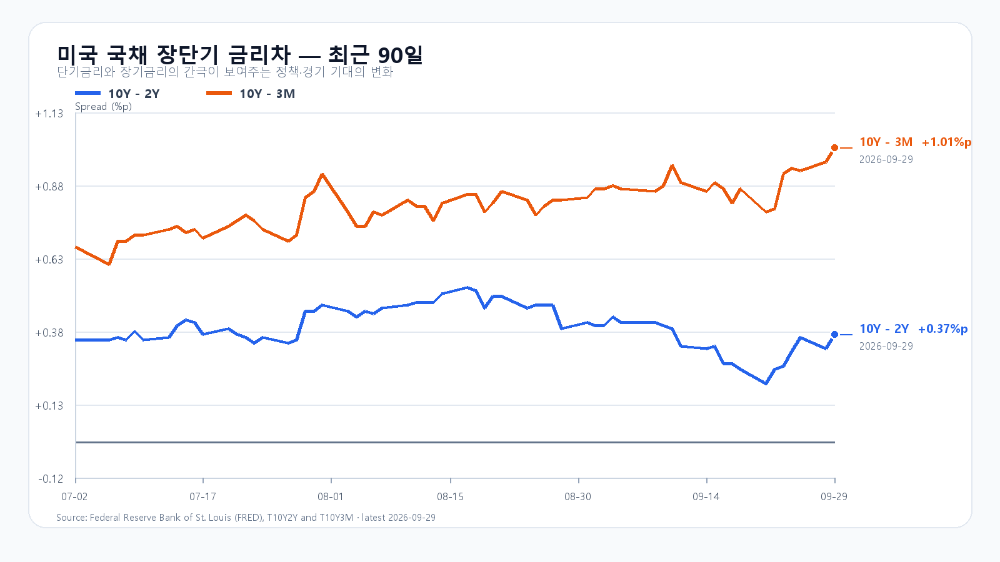
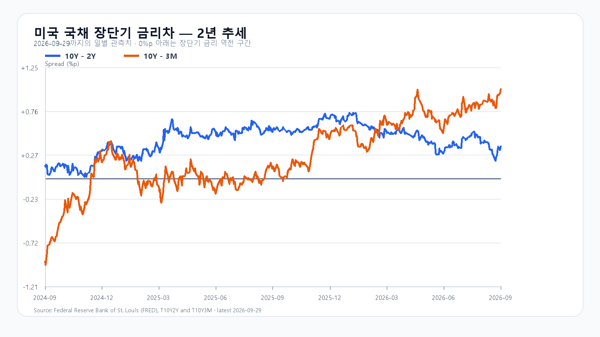

9월 29일 미국 반도체주는 다시 올랐다. SOXX는 1.19%, SMH는 1.15% 상승했고 Micron과 Broadcom도 각각 1.05%, 1.58% 올랐다. 밤사이 NXT에서 삼성전자와 SK하이닉스가 나란히 1%대 상승한 배경이다. 전날 KOSPI는 장중 6,782.99까지 밀렸다가 6,870.81로 마감했고 KODEX 레버리지는 110,285원으로 반등했다. 오늘은 전날 낙폭을 줄인 흐름이 6,900선 회복으로 이어지는지 확인할 자리다.
반등의 재료는 분명하지만, 상단을 바로 열어 주는 재료는 아니다. NVIDIA 이사회는 자사주 매입 한도를 1,500억달러 늘려 잔여 한도를 2,350억달러로 높였다. 그러나 Nvidia 주가는 0.72% 내렸다. 반도체 전반의 매수세가 돌아왔어도 가장 큰 AI 종목의 매물이 남아 있다는 뜻이다.
금리는 더 직접적인 제약이다. 미국 10년물은 5.24%, 2년물은 4.92%였고 10년-2년 금리차는 9월 29일 0.37%포인트까지 벌어졌다. Brent는 96달러대로 내려왔지만, 아직 에너지발 물가 부담을 지우기에는 높은 수준이다. 8월 JOLTS 구인은 708만건으로 시장 예상 720만건을 밑돌았고, 오늘 밤 미국 GDP와 개인소득·지출, 내일 새벽 Micron 실적이 그 부담을 다시 시험한다.
메모리의 실물 지표는 주가와 분리해 읽어야 한다. 9월 24일 공개 현물에서 DDR5 16Gb는 57.667달러로 0.29% 올랐고, DDR4 16Gb는 83.784달러로 0.70% 내렸다. 서버 메모리 수요의 바닥을 단정할 만한 변화는 아니며, 오늘 지수는 Micron 실적을 앞둔 포지션과 국내 수급의 영향을 더 크게 받을 가능성이 높다.
기본 시나리오는 KOSPI 6,800~6,950, 확률 50%다. NXT 반등과 원/달러 1,353.50원의 하락이 하단을 받치되, 5%대 장기금리가 6,950선 위의 추격을 제한하는 경우다. 6,950을 넘고 외국인 현물과 프로그램이 함께 순매수로 돌아서면 6,950 초과~7,100의 강세 범위를 본다. 반대로 6,800을 다시 이탈하고 두 수급이 함께 순매도로 기울면 6,600~6,800 미만의 약세 범위가 열린다.
KODEX 레버리지는 108,000원을 1차 지지, 110,285원을 반등 기준, 112,500원을 저항으로 둔다. 장중 고저 예상 범위는 KOSPI 6,550~7,100이다. 대응 점수는 공격 25, 관망 55, 방어 20이다.
| 종가 시나리오 | 범위·확률 | 15시 20분 확인 조건 | 전환 신호 |
|---|---|---|---|
| 기본 | 6,800~6,950 · 50% | 6,800 이상 · 6,950 이하 · 외국인 매도 급확대 없음 | 범위 이탈 |
| 강세 | 6,950 초과~7,100 · 25% | 6,950 초과 · 외국인·프로그램 동반 순매수 | 6,950 아래 재진입 |
| 약세 | 6,600~6,800 미만 · 25% | 6,800 미만 · 외국인·프로그램 동반 순매도 | 6,800 회복 |

